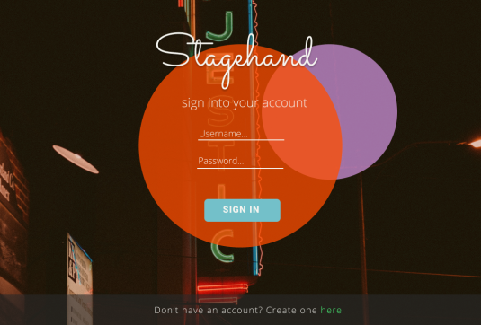
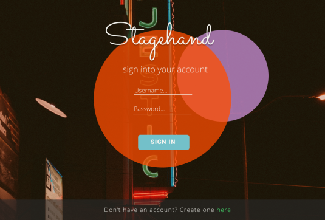

Overview:
Communication within the theatre is always chaos, with so much going on and with so many teams working on one project, a lot of information can get lost or overlooked. Stagehand is a web application that utilizes cloud storage to create more efficient and effective communication within the theatre.
Problem:
When you have multiple teams working on the same project, sometimes quality gets sacrificed for efficiency, leaving creative vision and promise unfulfilled. While there can only be so many meetings with cast, crew, and design teams, there needs to be a way to store share and consolidate information without bogging everyone down. That's where Stagehand comes in.
Solution:
Create a cloud storage web application that would streamline the communication between teams within the theatre. Stagehand enhances the communication experience of the production team. Information in the theatre is always changing and new ideas pop up frequently, it's hard to stay current on what the plan is. With Stagehand the user can upload, share, and edit their ideas, and keep up to the second record of what their tasks are. Along with that, they also recieve real-time updates from their stage managers and directors so that they can work with the utmost efficiency. This means you can get your work in on-time and on budget.